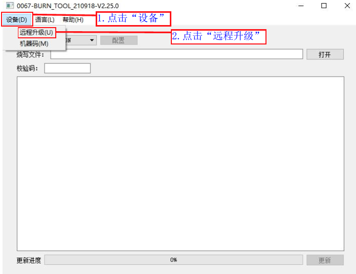
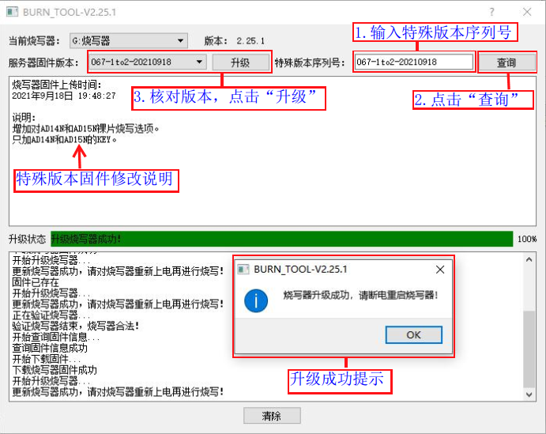

1.4. Remote Upgrade of the Programmer Firmware
1.4.1. Upgrade notes
The 1-to-2 programmer firmware is the firmware of the main control chip that controls the operation of the whole programmer.
The programmer firmware can be upgraded remotely with the PC tool burn_tool.exe.
The upgrade tool lets you choose one of the 3 latest official release firmware versions for the upgrade. It also supports upgrading to special programmer firmware versions made for specific applications and customer requirements.
The programmer firmware is optimized and upgraded from time to time as needed, to add features, improve performance, fix problems, etc. Under normal circumstances, be sure to upgrade to the latest version promptly; otherwise, programming problems may occur.
1.4.2. Upgrading to official release firmware
Open the remote upgrade control panel. There are two ways to open it.
Method 1: one PC can upgrade only 1 programmer
Method 2: one PC can upgrade 6 programmers at the same time
1.4.2.1. Method 1: one PC can upgrade only 1 programmer
Following the "Opening the deployment program interface" section, open the firmware update window, then proceed as shown in Steps to open the remote upgrade window:
[1] Click "Device" (设备);
[2] Click "Remote upgrade" (远程升级) to open the remote upgrade control panel. The remote upgrade window shown in Method 1 remote upgrade operation appears;

Steps to open the remote upgrade window
As shown in Method 1 remote upgrade operation:
[1] Select the programmer firmware version to upgrade to
[2] Click "Upgrade" (升级)
[3] After the upgrade succeeds, power-cycle the programmer (unplug the USB cable at the programmer end, then press the "Main power switch" (电源总开关) to turn it off and press it again to turn it on);
[4] After the power-cycle, the display shows "No programming file!" (无烧写文件!). Deploy the .fw, .ufw or .key file generated by the SDK build to the programmer as described in "Deploying the target chip firmware to the programmer"; you can then program chips offline;

Method 1 remote upgrade operation
1.4.2.2. Method 2: one PC can upgrade 6 programmers at the same time
Perform step [3] (right-click the "CD Drive" to open it) of the "Opening the deployment program interface" section: you will see the
burn_tool.exeexecutable. Copy only theburn_tool.exeexecutable to another location on the PC as a backupNote
Note: copy only
burn_tool.exe. Do not copy any other files; otherwise, the upgrade may failAfter powering on the programmer, connect the programmer to the PC with a USB cable (you can also connect the USB cable directly without powering it on) so that the programmer enters "PC mode" (PC模式). One PC can connect to 6 programmers at the same time through different USB ports; if there are not enough USB ports, use a USB hub;
Double-click the backed-up
burn_tool.exeto open the remote upgrade control panel, as shown in Method 2 remote upgrade operation:[1] Select the programmer firmware version to upgrade to
[2] For each channel on which a connected programmer has been detected, click "Upgrade" (升级) (up to 6 connected programmers can be upgraded at the same time)

Method 2 remote upgrade operation
After all channels being upgraded have been upgraded successfully, power-cycle the programmers (unplug the USB cable at the programmer end, then press the "Main power switch" (电源总开关) to turn it off and press it again to turn it on);
After the power-cycle, the display shows "No programming file!" (无烧写文件!). Deploy the .fw, .ufw or .key file generated by the SDK build to the programmer as described in "Deploying the target chip firmware to the programmer"; you can then program chips offline;
1.4.3. Upgrading to special version firmware
Upgrading to a special version follows basically the same procedure as the official release upgrade in "Upgrading to official release firmware". The main difference is that a special version upgrade requires you to enter the special version serial number.
As shown in Remote upgrade to a special version:
[1] Enter the serial number of the special version to upgrade to;
[2] Click "Query" (查询) to find the corresponding special version;
[3] Click "Upgrade" (升级). After the upgrade succeeds, power-cycle the programmer (unplug the USB cable at the programmer end, then press the "Main power switch" (电源总开关) to turn it off and press it again to turn it on);
[4] After the power-cycle, the display shows "No programming file!" (无烧写文件!). Deploy the .fw, .ufw or .key file generated by the SDK build to the programmer as described in "Deploying the target chip firmware to the programmer"; you can then program chips offline;

Remote upgrade to a special version
1.4.4. Handling upgrade errors
If the upgrade fails because the USB connection works loose or for a similar reason, power-cycle the programmer, plug in the USB cable again and repeat the normal upgrade procedure
If the remote upgrade tool never detects the programmer being connected, try the following:
[1] With the programmer unpowered, press and hold the "standalone button" on the programmer (see the pictures in Introduction to the programmer main unit)
[2] Plug the USB cable into the programmer and connect it to the PC
[3] Release the standalone button. The remote upgrade tool can now usually detect the programmer again. Upgrade with the previously backed-up
burn_tool.exeusing Method 2 in "Upgrading to official release firmware", following the normal upgrade procedure;